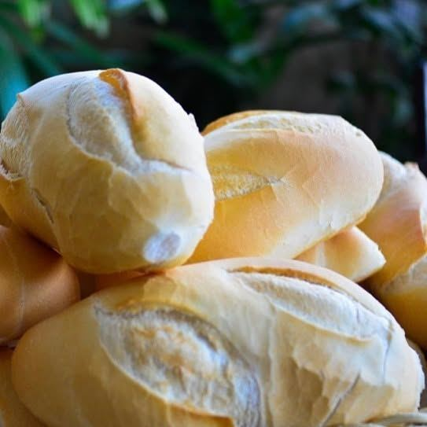
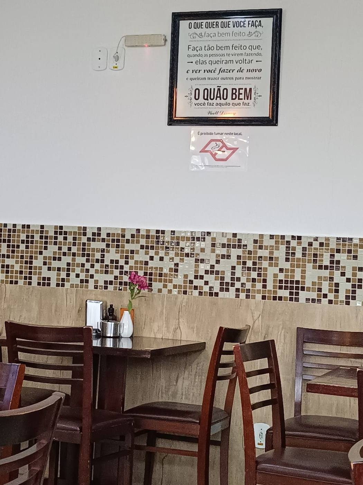
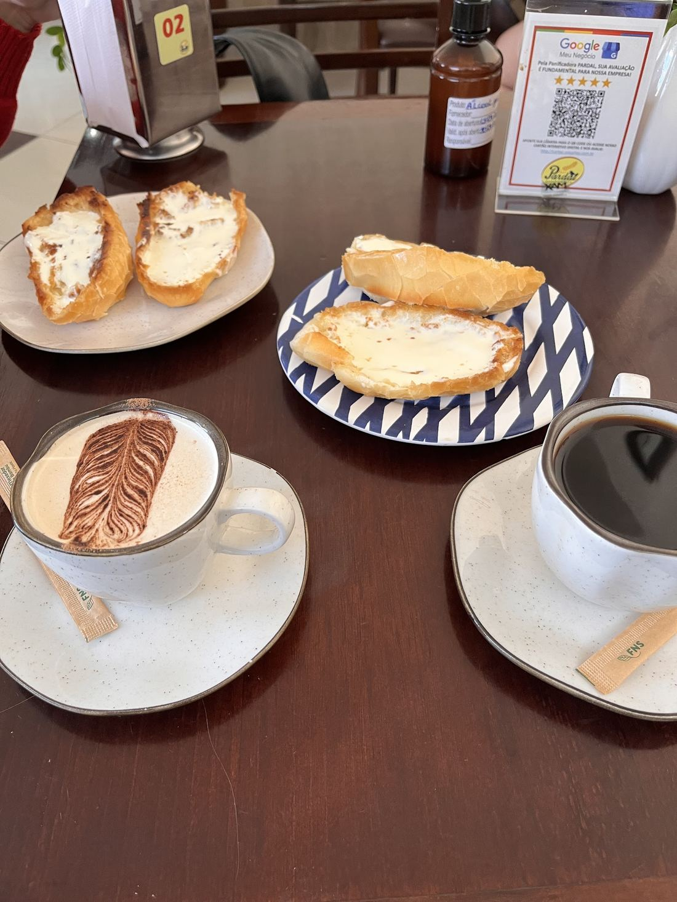
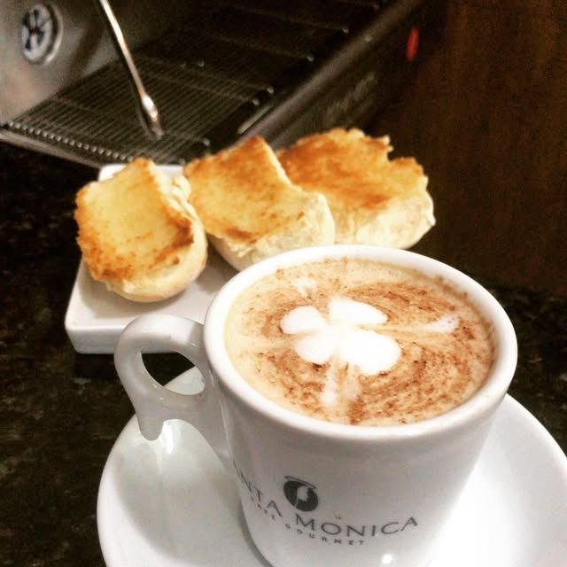
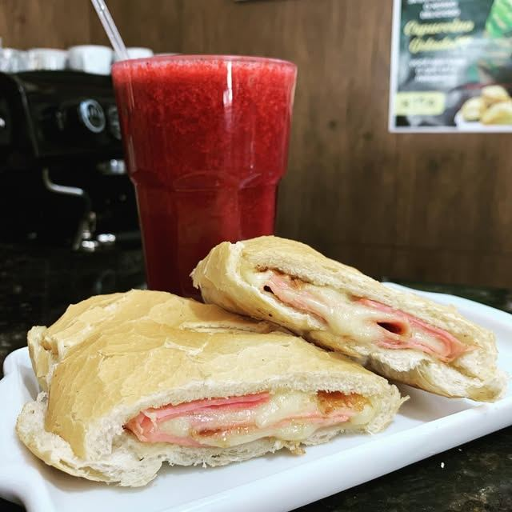
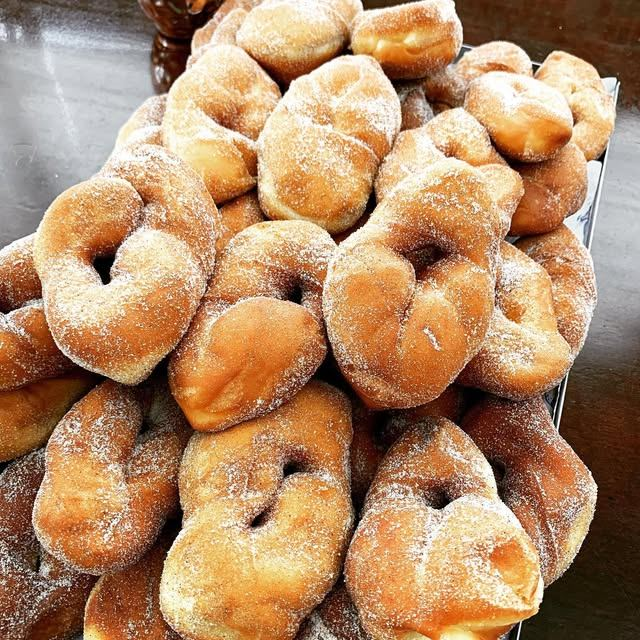
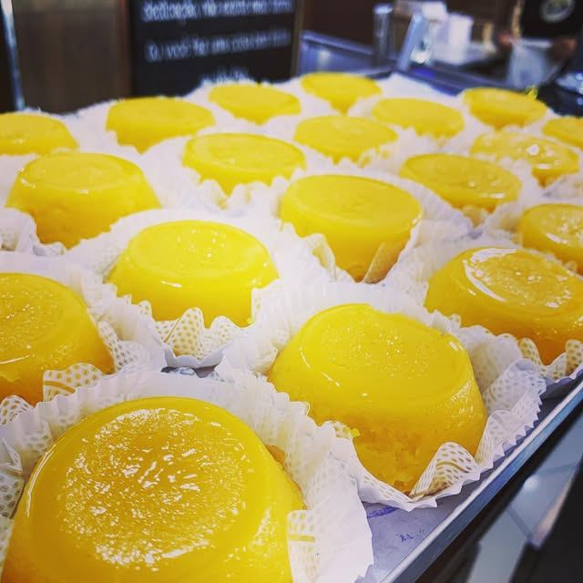
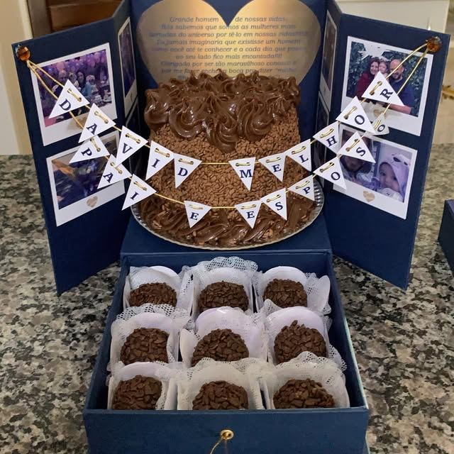
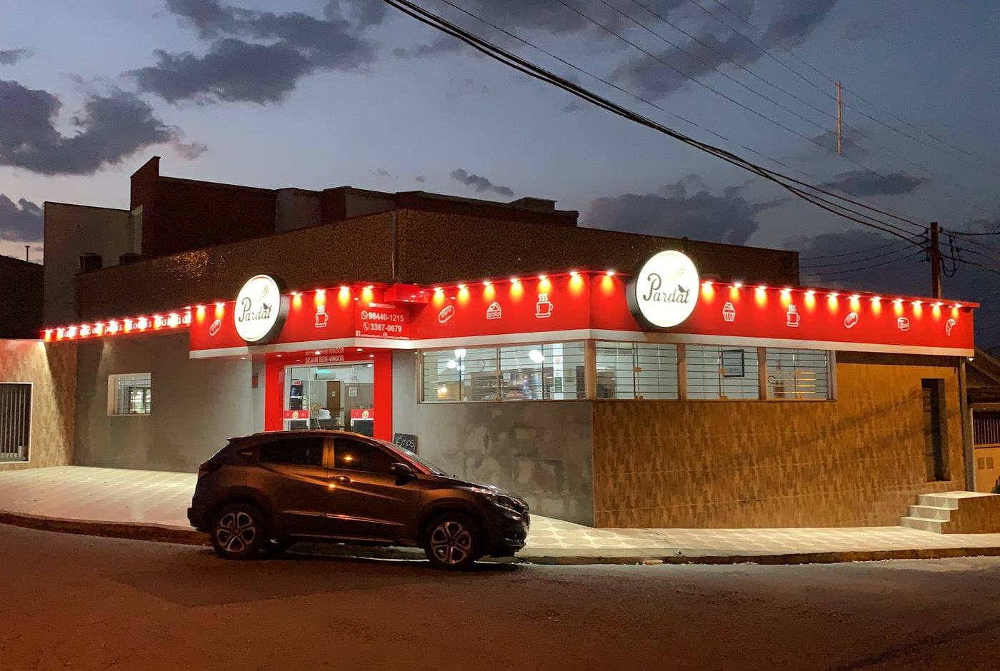

Pãozinho francês
Casquinha que estala, saindo em várias fornadas.
A Pardal é a padaria do bairro onde as donas estão sempre por perto, as meninas do balcão sabem o seu pedido e o domingo começa com cappuccino.
Quem vem uma vez repara nos detalhes: o salão limpo, as flores frescas em cada mesa e as donas atendendo junto com a equipe.


Pão, doce e salgado feitos para o dia a dia. Pergunte o que está saindo agora pelo WhatsApp.

Casquinha que estala, saindo em várias fornadas.

A dupla do café de domingo, com requeijão se quiser.

Lanche rápido no balcão ou na mesa.

Passadas no açúcar, do jeito de padaria antiga.

Brilhante e amarelinho, um dos doces da vitrine.
Pão de queijo, sanduíche e café para começar o dia.

Caixas montadas com bolo, doces e mimos para Dia das Mães, Dia dos Pais, aniversário ou só para agradecer alguém.
Uma das melhores padarias que já frequentei. Sempre tem flores na mesa e os detalhes tornam a experiência muito agradável.Katemann · Google
As meninas que trabalham lá são uns amores, e os donos estão sempre presentes, o que passa confiança.Joana · Google
Sempre vamos tomar café aos domingos. A comida é muito boa!Guilherme · Google
| Segunda | 6h às 19h30 |
| Terça | 6h às 19h30 |
| Quarta | 6h às 19h30 |
| Quinta | 6h às 19h30 |
| Sexta | 6h às 19h30 |
| Sábado | 6h às 19h |
| Domingo | 6h30 às 13h |
